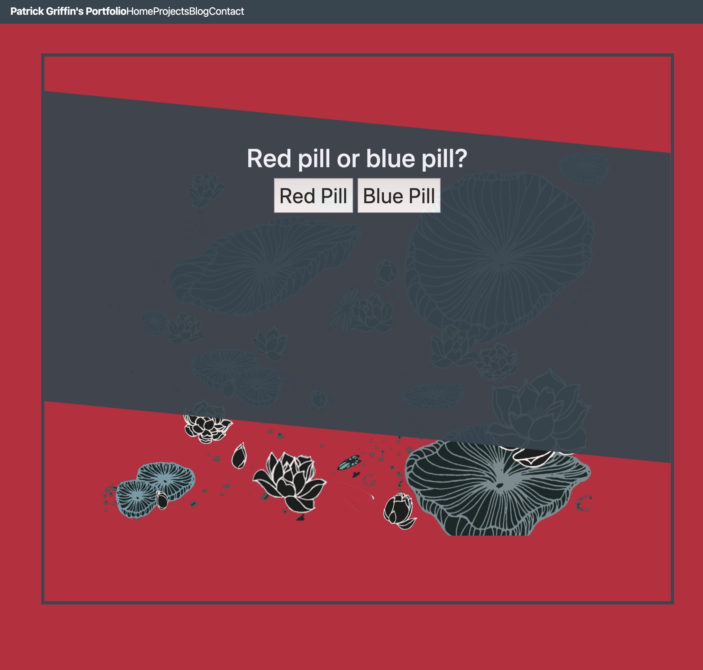

During this homework I spent a lot of my time trying to revamp my website from the template form that we worked on in class. I had probably gone through about 2 or 3 different designs before settling on the final design that I’ve submitted. I still have plenty of polishing to do, and who knows if this design will be the same come the end of the course. In my original templet I was trying to do slanted boxes where the background content would scroll under. Then I wanted to implement javascript code that would take the slanted box and merge it with the top of the webpage. My idea was to create a nice profile with my name and picture at the top of the page while the rest of my projects and blog post would be accessible.

I ended up finding some code to make a vertical scrolling webpage. But I was still pretty set on my slanted box format that I was working on before. I ended up merging to two concepts where I put my slanted boxes inside the bordered boxes in the vertical scrolling concept.
Changing to this web design meant that I wasn’t able to use the javascript code that I had been previously working on. I began to brainstorm what I could do to implement any kind of code. As someone that really enjoys movies, I decided it might be a fun idea to add some movie references through the implementation. My mind went straight to a favorite of mine, The Matrix. In my implementation, I decided to as two buttons at the end of my webpage. One button would be “the red pill” and the other “the blue pill.”
When clicking the red pill an eventListener calls the function goDownTheRabbitHole. This function gives the user an alert saying “The Matrix has you…” then changes the web page’s background to a gif of the iconic drizzling green numbers (aka “The Matrix).
On the alternative to “taking” the red pill, if you click the blue pill you’re ultimately deciding to conform to the rules of society, which I show through a reference to John Carpenter’s “The Live.” Much like the other button this button has an eventListener that calls allOutOfBubbleGum. This function has the same process as The Matrix functions but changes the background to the subliminal messages that can be seen in They Live after putting on the truth sunglasses.